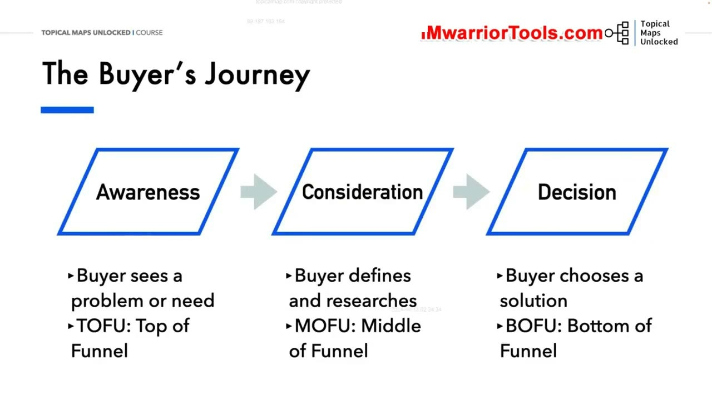
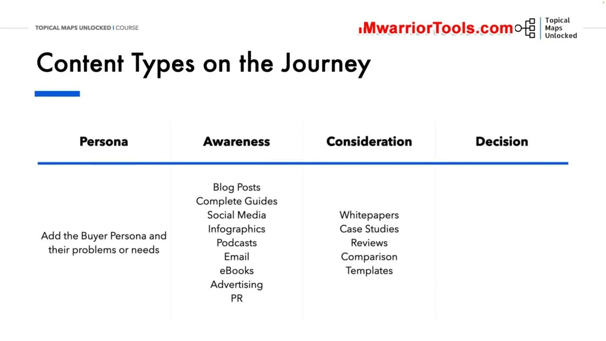
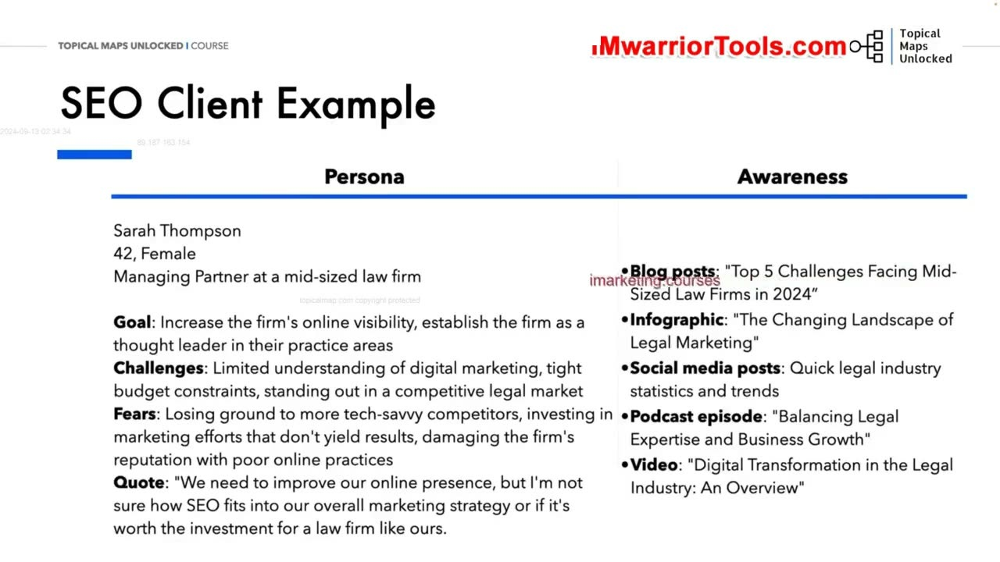
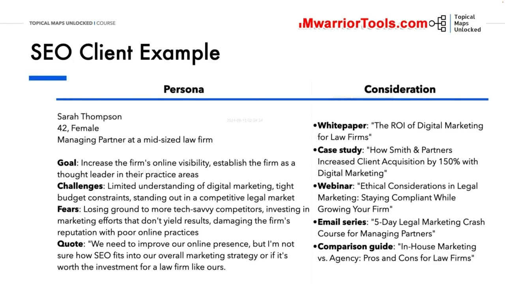
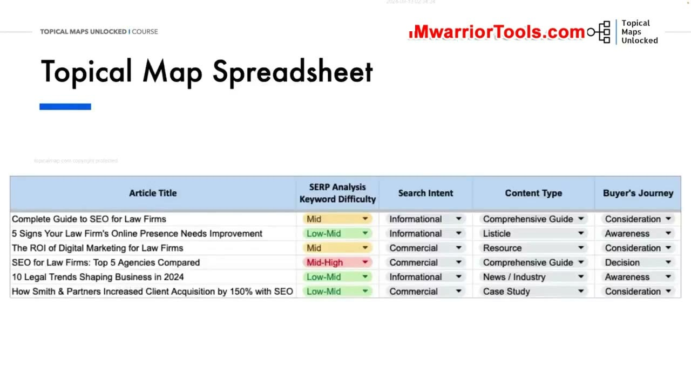

Buyer’s Journey and Content Map
1. Hành trình người mua (Buyer’s Journey) và 3 giai đoạn TOFU - MOFU - BOFU
Trong bài học mở đầu của Học phần 07, Yoyao giới thiệu mô hình nền tảng định hình toàn bộ chiến lược xuất bản nội dung: Buyer's Journey (Hành trình người mua) và cách ánh xạ nó vào bản đồ nội dung (Content Map). Mọi khách hàng trước khi đưa ra quyết định mua hàng hay sử dụng dịch vụ đều trải qua 3 giai đoạn tâm lý tuần tự:
- Awareness Stage (Giai đoạn Nhận thức - TOFU: Top of Funnel): Khách hàng bắt đầu nhận ra họ đang gặp phải một vấn đề, triệu chứng hoặc có một nhu cầu cụ thể cần giải quyết nhưng chưa biết đâu là giải pháp tối ưu. Họ chủ động tìm kiếm các thông tin giải thích bản chất vấn đề.
- Consideration Stage (Giai đoạn Cân nhắc - MOFU: Middle of Funnel): Khách hàng đã định hình rõ ràng vấn đề của mình và bắt đầu nghiên cứu, so sánh các phương pháp, giải pháp hoặc nhà cung cấp khác nhau trên thị trường. Họ tìm kiếm các bài phân tích sâu và nghiên cứu thực tế.
- Decision Stage (Giai đoạn Quyết định - BOFU: Bottom of Funnel): Khách hàng đã chọn ra phương pháp giải quyết và đang cân nhắc lần cuối để chọn mặt gửi vàng một sản phẩm, dịch vụ hoặc thương hiệu cụ thể để chi tiền. Họ cần các bằng chứng xác thực và báo giá chi tiết.
Một chiến lược nội dung xuất sắc phải đảm bảo cung cấp đầy đủ thông tin hữu ích cho khách hàng ở cả 3 giai đoạn này, dẫn dắt họ một cách tự nhiên từ người tìm hiểu ban đầu thành người mua hàng trung thành.

2. Ánh xạ các định dạng nội dung vào từng giai đoạn trong phễu
Để tối ưu hóa tỷ lệ chuyển đổi, bạn không thể dùng chung một kiểu bài viết cho mọi đối tượng. Yoyao phân loại rành mạch các định dạng nội dung tương ứng với từng giai đoạn phễu:
- Giai đoạn Nhận thức (Awareness): Các bài viết blog chia sẻ cẩm nang hướng dẫn toàn diện (Complete Guides), Đồ họa thông tin (Infographics), Tập Podcast chuyên đề, Sách điện tử Ebooks miễn phí và các bài thông cáo báo chí PR.
- Giai đoạn Cân nhắc (Consideration): Báo cáo kỹ thuật chuyên sâu (Whitepapers), Các nghiên cứu tình huống thực tế (Case Studies), Đánh giá so sánh đối đầu (Product Comparisons), Hội thảo trực tuyến (Webinars) và các tài liệu mẫu (Templates).
- Giai đoạn Quyết định (Decision): Bài viết giới thiệu tính năng sản phẩm (Product Demos), Lời chứng thực của khách hàng (Testimonials & Reviews), Bảng báo giá chi tiết (Pricing sheets), Bản dùng thử miễn phí (Free Trials) và các buổi gọi tư vấn chiến lược trực tiếp (Consultation Calls).

3. Nghiên cứu trường hợp cụ thể: Chân dung khách hàng SEO B2B Sarah Thompson
Để minh họa cách áp dụng vào thực tế, Yoyao phân tích chi tiết một ví dụ điển hình trong lĩnh vực cung cấp dịch vụ SEO và Marketing cho ngành Luật:
Chân dung khách hàng (Persona): Sarah Thompson (42 tuổi, Giám đốc điều hành công ty luật vừa và nhỏ):
- Mục tiêu kinh doanh: Gia tăng khả năng hiển thị trực tuyến của công ty luật và khẳng định vị thế chuyên gia đầu ngành trong các lĩnh vực tố tụng trọng tâm, thu hút thêm các khách hàng doanh nghiệp tiềm năng.
- Thách thức hiện tại: Kiến thức về tiếp thị số còn rất hạn chế, ngân sách bị thắt chặt và chịu áp lực cạnh tranh khốc liệt từ các công ty luật am hiểu công nghệ hơn đang chiếm lĩnh các từ khóa pháp lý đắt giá.
- Nỗi sợ hãi sâu kín: Sợ đầu tư ngân sách lớn vào các dịch vụ marketing không mang lại hiệu quả thực tế, lãng phí tài chính và làm tổn hại uy tín lâu năm của văn phòng luật sư nếu áp dụng các chiến thuật SEO tiêu cực.
- Trích dẫn tiêu biểu: "Chúng tôi cần cải thiện sự hiện diện trực tuyến của mình, nhưng tôi không chắc SEO sẽ ăn khớp như thế nào với chiến lược tiếp thị tổng thể của một công ty luật chuyên nghiệp như chúng tôi."
Việc xây dựng một hồ sơ Persona sắc nét như Sarah giúp đội ngũ sáng tạo nội dung luôn có một hình mẫu sống động trước mắt, từ đó điều chỉnh văn phong sao cho vừa mang tính học thuật pháp lý chuẩn mực, vừa dễ tiếp cận đối với một người quản lý bận rộn.

4. Thiết kế nội dung đa tầng phục vụ Sarah qua từng giai đoạn phễu
Bám sát hành trình tâm lý của Sarah, đội ngũ tiếp thị thiết kế một chuỗi nội dung chuyển tiếp hoàn hảo và mượt mà:
- Nội dung Nhận thức (Awareness - TOFU): Bài viết blog chuyên đề "Top 5 thách thức tiếp thị mà các công ty luật quy mô vừa phải đối mặt trong năm 2024", Đồ họa thông tin Infographic về bối cảnh chuyển dịch tiếp thị số trong ngành luật, và tập Podcast chuyên sâu bàn về sự cân bằng giữa chuyên môn pháp lý và tăng trưởng doanh thu. Những nội dung này giúp Sarah nhận ra vấn đề của mình mà không hề có cảm giác bị ép buộc mua hàng.
- Nội dung Cân nhắc (Consideration - MOFU): Báo cáo kỹ thuật Whitepaper "Tỷ suất sinh lời ROI của Digital Marketing đối với ngành luật: Số liệu và thực tế", Nghiên cứu điển hình Case Study "Cách công ty luật Smith & Partners tăng 150% lượng khách hàng mới nhờ chiến lược Topical Authority", Hội thảo trực tuyến Webinar "Các chuẩn mực đạo đức cần lưu ý khi tiếp thị ngành luật", và Bảng so sánh "Tự xây dựng đội ngũ In-House vs Thuê Agency ngoài: Đâu là lựa chọn tối ưu cho công ty luật vừa và nhỏ?".
- Nội dung Quyết định (Decision - BOFU): Lời đề nghị kiểm toán miễn phí "Kiểm toán tiếp thị số và đề xuất lộ trình SEO cá nhân hóa cho văn phòng luật của bạn", Buổi tư vấn chiến lược 30 phút cùng chuyên gia đầu ngành, Bảng báo giá chi tiết và các video lời chứng thực từ các luật sư đồng nghiệp đã thành công.
Một chuỗi phễu nội dung liền mạch như vậy sẽ dẫn dắt Sarah từ một người xa lạ trở thành một khách hàng trung thành với niềm tin tuyệt đối vào năng lực chuyên môn của bạn.

5. Tích hợp cột Buyer’s Journey vào Bảng tính Topical Map Spreadsheet
Bước cuối cùng là tích hợp tư duy phễu này vào bảng tính Topical Map Spreadsheet: Yoyao bổ sung thêm một cột chuyên dụng mang tên Buyer's Journey ngay cạnh cột ý định tìm kiếm (Search Intent).
Điều này giúp người quản trị website luôn kiểm soát được tỷ lệ phân bổ nội dung một cách cân bằng: Không bị rơi vào tình trạng 100% bài viết chỉ là thông tin lý thuyết suông (TOFU) mà thiếu đi các bài viết thúc đẩy chuyển đổi (MOFU/BOFU); đồng thời cũng không biến website thành một cỗ máy bán hàng lộ liễu khiến người dùng ác cảm. Đây chính là chìa khóa giúp kết hợp hài hòa giữa thẩm quyền SEO và doanh thu kinh doanh thực tế.

Nguồn và đối chiếu
- Topical Maps Unlocked 2.0 · 01-Buyer’s Journey and Content Map (Video bài học chính).
- Bản tiếng Anh không có video riêng cho bài học này; nội dung đối chiếu trực tiếp từ slide và video chính.